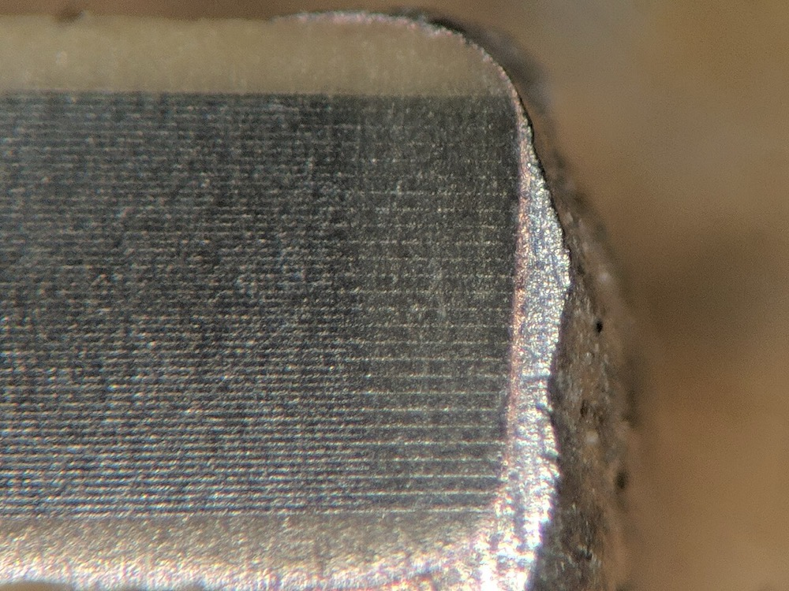
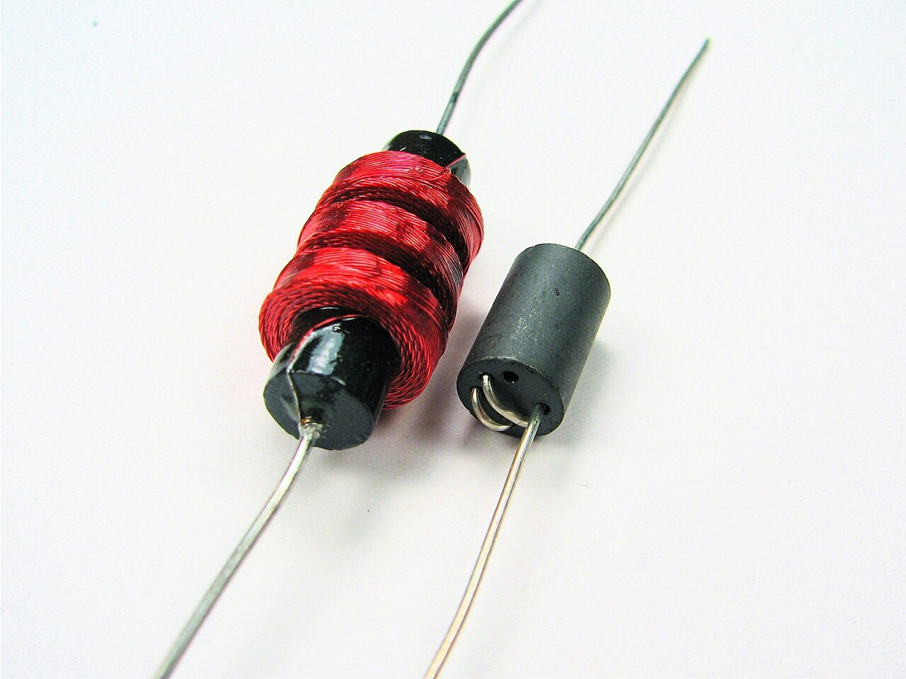
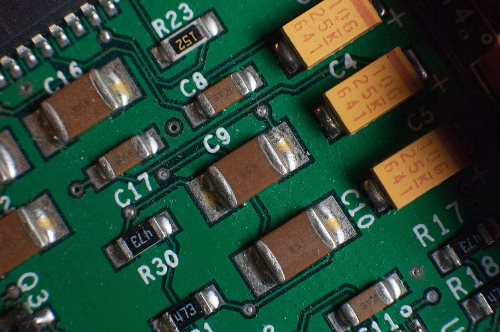
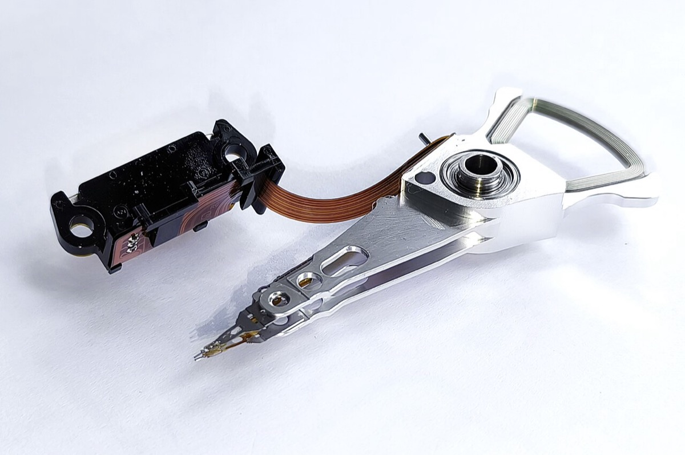
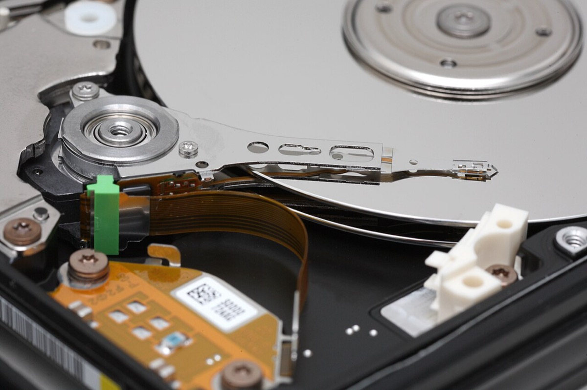
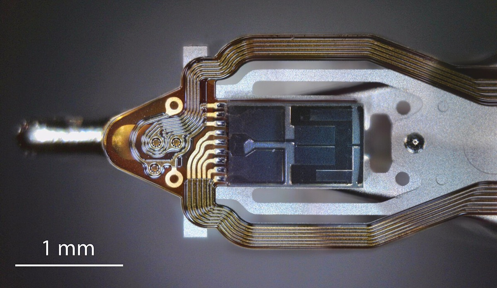
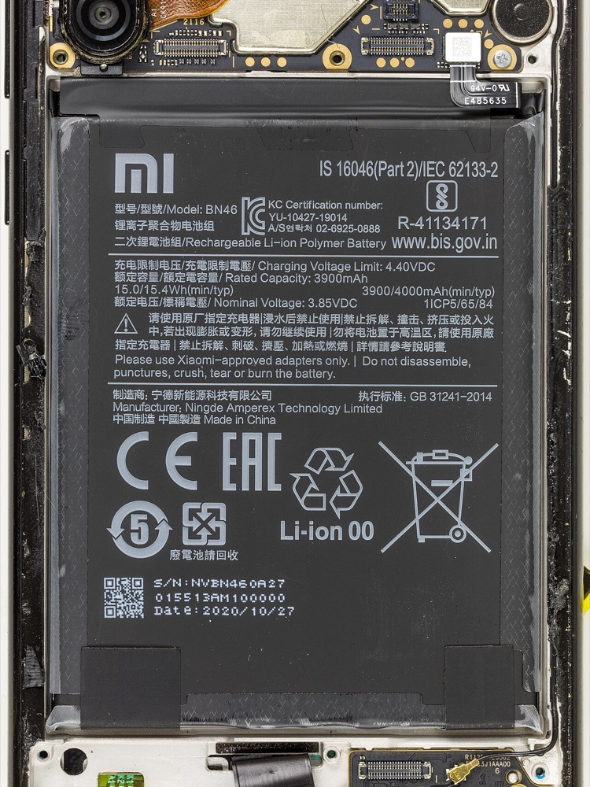
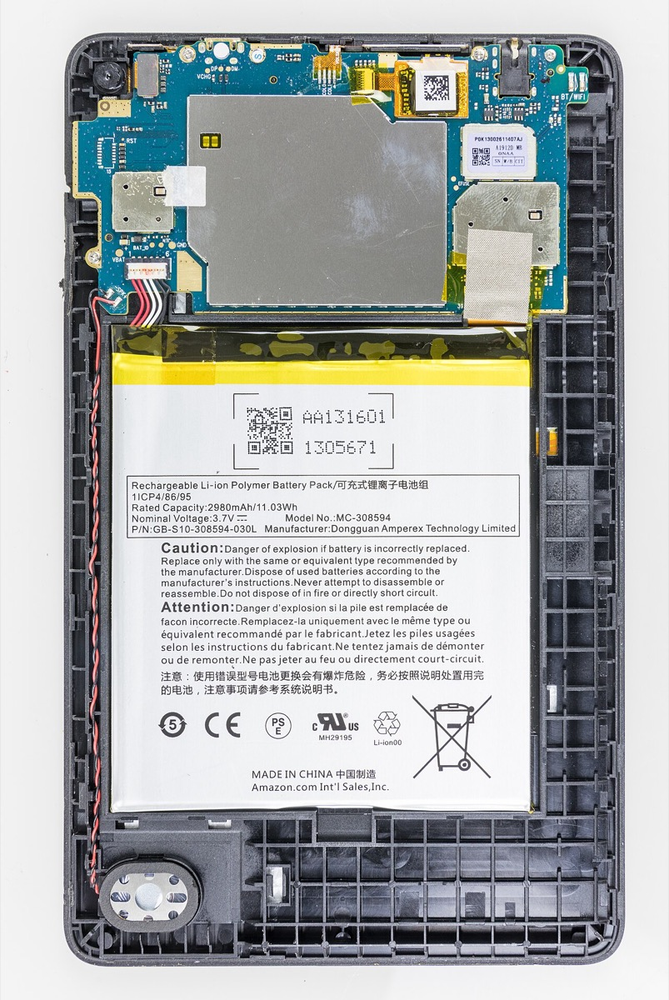

TDK株式会社
連結売上の過半と利益の中心はエナジー応用製品（二次電池と電源の合算）にある。合算セグメントの利益率は受動部品を上回るが、二次電池単体の営業利益率は非開示である。中国売上55.0%は顧客所在地ベースであり、非流動資産の中国比率と同じ指標ではない。
主張
読者と判断：TDKの倍率を読むとき、次の2点を決められる。「開示上のエナジー応用製品セグメントが自社内で低採算だから割引」と読むか否か。中国売上55%を最終需要や米中摩擦の単一感応度指標として使うか否か。二次電池単体の採算と、村田対比の割引全体の主因は、ここでは確定しない。
- 主張：倍率割引を「開示上のエナジー応用製品が自社内で低採算だから」と読むのは誤りである。FY2026のセグメント利益率はエナジー応用製品18.0%、受動部品7.1%である。ただしエナジー応用製品は二次電池と電源の合算であり、二次電池単体の営業利益率が受動部品を上回るか下回るかは判定できない。ATLの税引前利益率30.2%は電池子会社の参考値だが、税引前であり営業利益率ではない。連結営業利益率10.9%や受動部品のセグメント利益率との同基準比較には使えない。反証条件：エナジー応用製品のセグメント利益率が受動部品を下回る開示。二次電池単体では、分離された営業利益率が開示され受動部品との大小が逆転すること。判定：合算セグメントの低採算説明は棄却（支持）。二次電池単体の採算比較は判定不能（分離開示がない。ATL税引前と営業利益率の混同は避ける）。
- 主張：中国売上55.0%は外部顧客の所在地ベースであり、組立地・最終需要地・TDKの製造拠点とは同一視できない。中国売上比率を米中摩擦の単一感応度指標として使うと誤る。反証条件：有報が地域別売上を最終需要地、組立地、または製造拠点で定義していること。判定：支持（有報は「外部顧客の所在地」と明記する。組立地との対応表はない。中国の非流動資産5,883億円・約38.3%と生産額約62%は別指標である）。
分解：物理的制約は、小型二次電池ではセル体積あたりのエネルギー密度と歩留まり、受動部品では材料と積層工程で原価が決まる点である。お金の流れは、受動部品では顧客が型番を指定して単価を抑える一方、電池は端末設計に組み込まれるため切替費用が高い。利得の帰属はATL（議決権100%）の税引前利益と、連結上の非支配持分（資本の0.7%）に分かれる。法と強制力は原産地規則に基づく追加関税と輸出規制であり、売上側（顧客所在地）と資産側（工場立地）の両経路がある。時間はスマートフォンの年次周期、HDDの更新周期、BEVの多年度周期が重なるか否かで損益の振れが決まる。
1結論Verdict
本社は東京都中央区日本橋二丁目5番1号。設立は1935年。従業員数は2026年3月末で106,545人である。12
2利益の所在：受動部品と電池で価格決定権が逆であるWhere Margin Lives
報告セグメントは受動部品・センサ応用製品・磁気応用製品・エナジー応用製品の4つである。これらに属さない区分が「その他」である。1 受動部品では顧客が型番を指定し単価を抑える。電池は端末の設計に組み込まれるため切替費用が高く、価格決定の位置が異なる。ただし利益率の開示単位は、二次電池単体ではなくエナジー応用製品（二次電池と電源の合算）である。FY2026のセグメント利益率は合算単位で読む。
| セグメント | 売上高（百万円） | 構成比 | セグメント利益（百万円） | 利益率 | 売上YoY |
|---|---|---|---|---|---|
| 受動部品 | 593,201 | 23.7% | 41,831 | 7.1% | +6.0% |
| センサ応用製品 | 224,623 | 9.0% | 20,748 | 9.2% | +18.6% |
| 磁気応用製品 | 262,903 | 10.5% | 26,951 | 10.3% | +17.6% |
| エナジー応用製品 | 1,370,304 | 54.7% | 246,682 | 18.0% | +16.5% |
| その他 | 53,789 | 2.1% | △10,230 | n/a | △3.2% |
| 調整額 | — | — | △53,567 | — | — |
| 連結合計 | 2,504,820 | 100.0% | 272,415 | 10.9% | +13.6% |
時点：2026年3月期。利益率はセグメント利益÷売上高。連結営業利益率は調整後。出典：決算短信・有報。12



.jpg){kind=link}


受動部品の内訳は次のとおりである。コンデンサ2,575億円。インダクティブデバイス2,162億円。その他受動部品1,195億円。1 エナジー応用製品は二次電池と電源で構成され、増収の主因はICT市場向けのエナジーデバイスである。1 有報は、二次電池全体と産業機器用電源の双方が増収増益だったと記す。ただし二次電池と電源の売上・営業利益の内訳金額は開示されない。2 自動車市場ではBEV需要の低迷が続き、部品需要は期初想定を下回った。1 トラクション電池の売上比率は非開示である。確認できるのは、EV用電源製品事業で減損損失908百万円を計上したことである。2






3利益の帰属：ATLは100%子会社であり、非支配持分は薄いWho Owns the Profit
二次電池の中核子会社はATLである。有報の関係会社の状況では、Amperex Technology Limited（香港）の議決権所有割合は100%（うち間接57.6%）、Ningde Amperex Technology Limited（中国・寧徳）も100%（間接100%）である。2 売上高が連結の10%超となる特定子会社として、ATLの主要な損益情報等が開示される。2
| ATL（主要な損益情報等） | FY2024 | FY2025 | FY2026 |
|---|---|---|---|
| 売上高（百万円） | 465,808 | 508,935 | 545,592 |
| 税引前利益（百万円） | 47,322 | 189,997 | 164,722 |
| 税引前利益／売上 | 10.2% | 37.3% | 30.2% |
FY2024は第128期有報、FY2025は第129期、FY2026は第130期。234 会計単位の注意：ATLの開示は税引前利益であり、セグメント利益（営業利益相当）とは基準が異なる。ATL売上5,456億円はエナジー売上1兆3,703億円の約39.8%である。残差には電源と、ATL以外のエナジー子会社が含まれる。二次電池全体の売上・営業利益はここからも復元できない。税引前利益率30.2%は営業利益率ではないため、連結営業利益率10.9%や受動部品のセグメント利益率7.1%との同基準比較には使えない。
連結の非支配持分は、FY2025末11,184百万円、FY2026末16,311百万円である。資本合計2兆2,035億円に対し0.7%である。2 非支配持分に帰属する当期利益はFY2025が3,228百万円、FY2026が3,504百万円である。2 ATLは100%子会社であるため、ATLの税引前利益1,647億円が非支配持分へ漏出する構造ではない。非支配持分による帰属の薄さは、開示金額では主因にならない。一方、税引前利益率の高さをもって「電池の営業採算が高い」と読むこともできない。



_-_cover_removed-2307.jpg){kind=link}
4中国売上55%は顧客所在地であり、組立地・最終需要地とは同一視できないChina Sales Are Customer Location
地域別売上は外部顧客の所在地ベースである。12 有報は組立地や最終需要地との対応を示していない。したがって中国売上比率を最終需要の中国依存と同一視できない。顧客の組立地構成や、TDK自身の工場立地比率とも同一視できない。
| 地域 | FY2025（百万円） | 構成比 | FY2026（百万円） | 構成比 | YoY |
|---|---|---|---|---|---|
| 日本 | 174,415 | 7.9% | 183,460 | 7.3% | +5.2% |
| 米州 | 140,109 | 6.4% | 145,419 | 5.8% | +3.8% |
| 欧州 | 175,168 | 7.9% | 181,201 | 7.2% | +3.4% |
| 中国 | 1,192,472 | 54.1% | 1,378,025 | 55.0% | +15.6% |
| アジア他 | 522,642 | 23.7% | 616,715 | 24.6% | +18.0% |
| 合計 | 2,204,806 | 100.0% | 2,504,820 | 100.0% | +13.6% |
海外売上高比率はFY2026で92.7%。出典：有報・決算短信。12
FY2026はアジア他の伸び（+18.0%）が中国（+15.6%）を上回る。有報は、アジア他の増加に磁気応用製品とエナジー応用製品が寄与したと記す。2 中国向けの増分の主因はセンサ応用製品である。2 中国売上比率自体は54.1%から55.0%へ上昇した。顧客所在地の変化と、TDKの生産拠点の変化は分けて追う必要がある。
| 指標 | FY2026の値 | 意味 | 米中摩擦の作用経路 |
|---|---|---|---|
| 中国売上比率 | 55.0% | 外部顧客の所在地 | 顧客側の所在。組立地・最終需要地とは未対応 |
| 中国拠点の生産額 | 約62% | TDKの製造の実行地 | 輸出規制・操業制約が直接かかる |
| 中国の非流動資産 | 5,883億円（約38.3%） | 有形・使用権・のれん・無形の地域残高 | 関税・規制でも短期間では動かない |
5顧客集中とApple向けの挟み込みCustomer Concentration and Apple Bounds
連結売上高の10%を超える顧客グループは、前後期ともに1グループである。2 FY2026の売上は4,664億円、連結比19%（466,405÷2,504,820＝18.6%。有報本文は19%）で、主にエナジー応用製品に計上される。2 顧客名は非開示である。TDKは2026年3月27日に、Apple製品向け次世代センサの米国生産と、電子部品・二次電池を含む協業を発表している。7 19%をApple単独の比率と同一視する根拠は一次開示にない。
需要の周期は一様ではない。ICT（スマホ等）は年次、HDDはデータセンターの更新、BEVは多年度である。FY2026はエナジーと磁気が伸び、BEV向け部品は想定を下回った。1 3つの谷が同時に来るかどうかが、損益の振れ幅を決める。
| 変数 | 感応度 | メカニズム | 向き |
|---|---|---|---|
| 主要顧客グループ | 高 | 連結売上の19%。主にエナジー。名称非開示2 | 両面 |
| 為替（USD/JPY） | 高 | ドル1円の円高で営業利益約20億円減2 | 両面 |
| ICT生産 | 高 | エナジー・センサの主需要。FY2027見通しはICT生産減を前提1 | 逆風（会社前提） |
| データセンター向けHDD | 中〜高 | 磁気応用製品がICT向けに増収1 | 追い風 |
| BEV需要 | 中 | 自動車部品が期初想定を下回る。トラクション電池本体の比率は非開示12 | 逆風 |
6同業倍率：低採算説では足りないPeer Multiples
倍率は2026年9月25日時点の時価総額と、各社の直近本決算売上・会社予想利益に基づく（Yahoo!ファイナンス、confidence: single-source）。8910 村田製作所のコンポーネント事業の営業利益率は26.8%である。11 TDKのエナジー合算利益率18.0%は自社受動部品7.1%を上回るが、村田コンポーネントには届かない。「開示上のエナジー合算が自社内で低採算」という説明は棄却できる。二次電池単体の営業利益率は非開示のため、村田対比の割引全体を電池単体の低採算で棄却することも支持することもできない。中国リスクへ全額帰属させることも、ここではできない。
| 会社 | 時価総額 | 予想PER | PSR（実績売上） | 直近本決算売上 | 対照すべき利益率 |
|---|---|---|---|---|---|
| TDK（6762） | 5兆7,888億円 | 25.1倍 | 2.31倍 | 2兆5,048億円 | エナジー合算18.0%／ATL税引前30.2%（営業利益率ではない） |
| 村田製作所（6981） | 15兆7,472億円 | 43.2倍 | 8.60倍 | 1兆8,309億円 | コンポーネント26.8%／連結15.4% |
| 太陽誘電（6976） | 1兆2,601億円 | 39.9倍 | 3.55倍 | 3,553億円 | 受動部品中心 |
時価総額・予想PERはYahoo!ファイナンス（2026-09-25、confidence: single-source）。8910 PSRは時価総額÷各社FY2026売上。11112 村田コンポーネント利益率は同社決算短信。11
7誰が得をするかWho Benefits
- TDK株主（親会社の所有者）：ATLは100%子会社であり、税引前利益1,647億円の帰属先は親会社側である。非支配持分への分流は連結利益の一部（35億円）にとどまる。2
- 主要顧客グループ（名称非開示）：連結売上の19%を占め、専用設備投資に対する買取責任契約など、切替費用を双方が抱える構造が有報に記載される。2
- 中国に所在する顧客（名称非開示を含む）：地域別売上の定義上、その所在地が中国売上に計上される。組立地や最終需要地との対応は有報にない。
- 中国に固定された生産能力の保有者（TDK自身）：非流動資産5,883億円と生産約62%は、売上比率が下がっても規制・関税の対象として残る。2
8残っている問いOpen Questions
- 二次電池と電源の営業利益率はそれぞれいくらか。 合算セグメントの低採算説明は棄却できた。電池単体の採算比較には、二次電池と電源の分離開示、またはATL等の電池法人の営業利益率が必要である。
- 村田対比の倍率割引のうち、中国資産集中と単一顧客集中の寄与はどれだけか。 村田コンポーネント利益率26.8%との差と成長期待、資本集約度を分離する開示はない。
- 中国子会社からの配当・送金に実務上の制約はあるか。 FY2026有報に具体的な制約注記はなく、帰属可能性を配当経路で検証できなかった。
- Apple向け比率の点推定はどこまで狭められるか。 本稿の区間は推定下限4.3%から開示上限19%である。ATLの顧客別売上やiPhone向けセル単価の一次開示があれば、区間を更新できる。
9出典Sources
取得日は再作成時点（2026-11-11）および初版作成時（2026-09-25）。数値の時点は各出典の記載に従う。
- TDK「Consolidated Financial Results for FY March 2026 (Under IFRS)」2026年4月28日 — https://www.tdk.com/system/files/2026042800_0mqf56xw_en.pdf
- TDK 有価証券報告書 第130期（2025年4月1日〜2026年3月31日） — https://www.tdk.com/system/files/ir_library_report_pdf_T130_ja.pdf
- TDK 有価証券報告書 第129期（2024年4月1日〜2025年3月31日） — https://www.tdk.com/system/files/ir_library_report_pdf_lib40430_ja.pdf
- TDK 有価証券報告書 第128期（2023年4月1日〜2024年3月31日） — https://www.tdk.com/system/files/ir_library_report_pdf_lib40410_ja.pdf
- Counterpoint Research「Global Smartphone Manufacturing to Weaken in 2025, India to Buck Trend」 — https://counterpointresearch.com/en/insights/post-insight-global-smartphone-manufacturing-to-weaken-in-2025-india-to-buck-trend
- TrendForce「Apple Reportedly Doubles iPhone Production in India…」（2024年4月11日） — https://www.trendforce.com/news/2024/04/11/news-apple-reportedly-doubles-iphone-production-in-india-while-foxconn-holds-67-share/
- TDK「TDK to begin U.S. production of advanced sensors for Apple products」2026年3月27日 — https://www.tdk.com/en/news_center/press/20260327_01.html
- Yahoo!ファイナンス ＴＤＫ(6762)（2026-09-25） — https://finance.yahoo.co.jp/quote/6762.T
- Yahoo!ファイナンス 村田製作所(6981)（2026-09-25） — https://finance.yahoo.co.jp/quote/6981.T
- Yahoo!ファイナンス 太陽誘電(6976)（2026-09-25） — https://finance.yahoo.co.jp/quote/6976.T
- 村田製作所 2026年3月期 決算短信〔IFRS〕(連結) — https://corporate.murata.com/-/media/corporate/about/newsroom/news/irnews/irnews/2026/0430/25q4-j-fls.ashx
- 太陽誘電 2026年3月期 通期決算説明会資料 — https://pdf.irpocket.com/C6976/Kdx3/uwLU/OZ0M.pdf
- IDC「Worldwide Smartphone Market to Grow 1.5% in 2025…」（Apple出荷見通し2.474億台、世界12.5億台）2025年12月2日 — https://my.idc.com/getdoc.jsp?containerId=prUS53965725
本ページは公開情報の整理であり、投資勧誘や投資判断の提示ではない。数値は出典時点のものであり、その後の訂正・修正開示があればそちらが優先する。